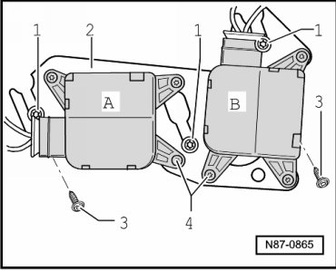

Left Temperature Door
Door Motors
Left Temperature Door
Removing
- Remove the lower retaining plate on the left side of the A/C unit. Refer to --> [ Left Lower A/C Unit Retaining Plate ] Left Lower A/C Unit Retaining Plate
- Remove the screws - 4 - (quantity: 3) from the left motor, identified by - A - in the illustration.

- Remove control motor from retaining plate - 2 -.
Installing
Installation is carried out in the reverse order, when doing this note the following:
- Initiate Basic Setting function with Diagnostic Operation System (VAS 5051B). Refer to--> [ Climatronic A/C System with Automatic Control, Checking and Adjusting ] Climatronic A/C System with Automatic Control, Checking and Adjusting.